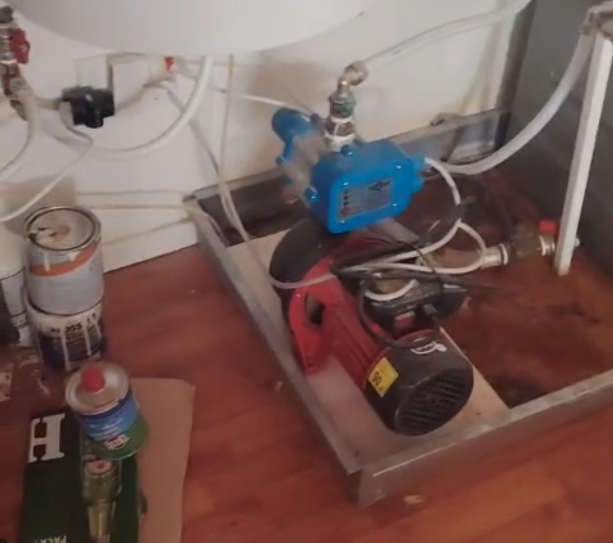
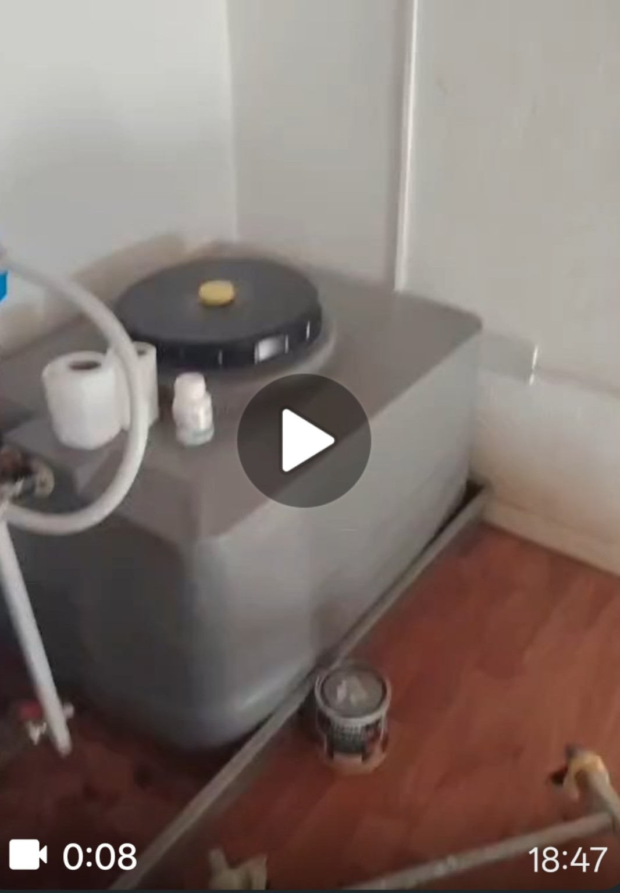
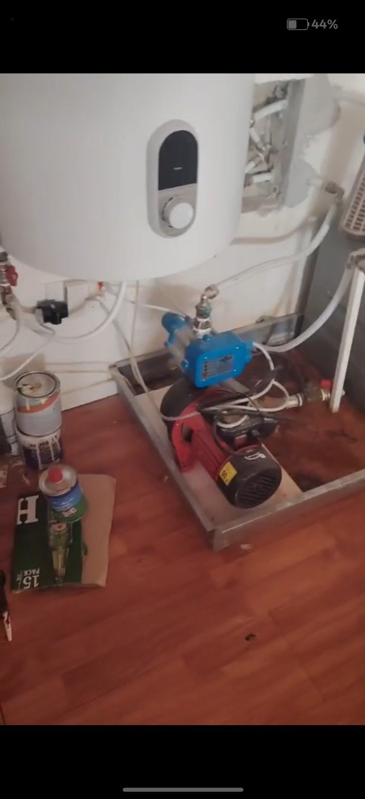
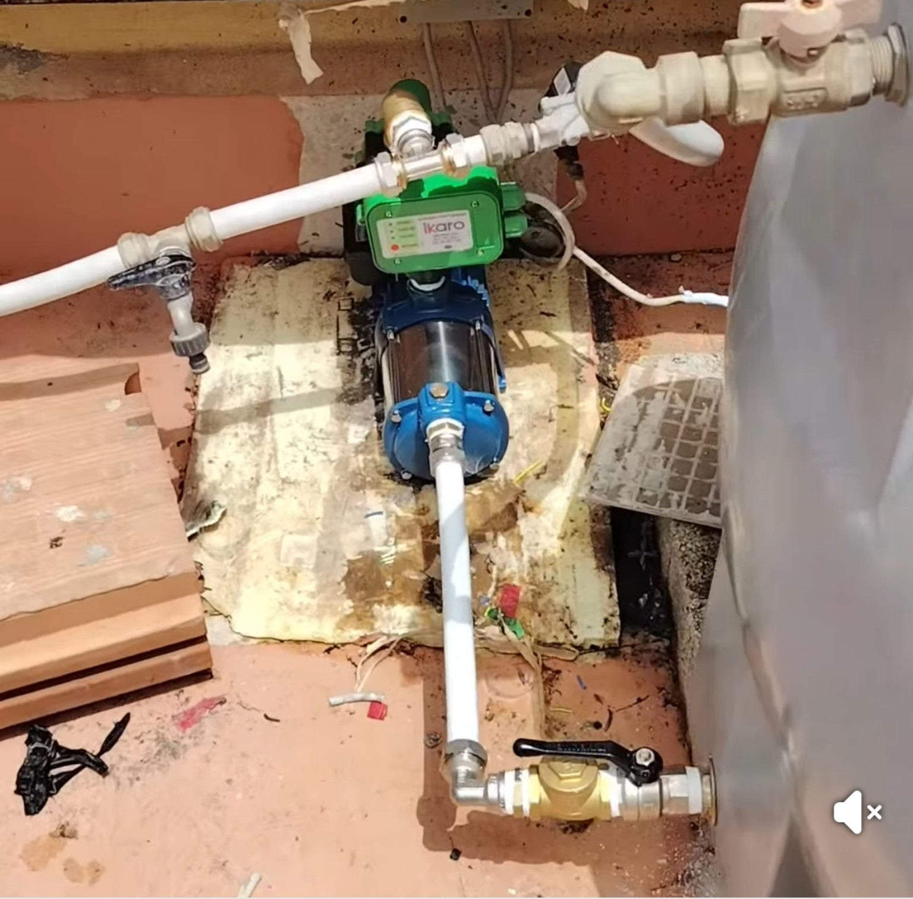
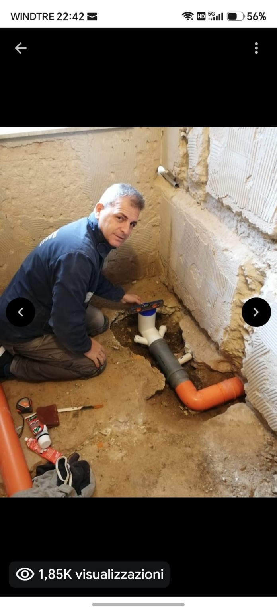

Pronto intervento
Per perdite, guasti e problemi idraulici.
GIANLUCA LATINA • SIRACUSA
Interventi per perdite e guasti, disotturazioni, impianti idraulici e termoidraulici, sanitari, scarichi e manutenzione per abitazioni e attività.
IL SERVIZIO
Per perdite, guasti e problemi idraulici.
Valutazione del lavoro prima dell’intervento.
Dalla riparazione al ripristino dell’impianto.
PRONTO INTERVENTO IDRAULICO
Descrivi il problema e la zona dell’intervento. Per le richieste urgenti è preferibile la chiamata diretta.
INTERVENTI PRINCIPALI
IMPIANTI GAS
Installazione e adeguamento degli impianti per l’alimentazione gas, verifica di tenuta e messa in servizio.

AUTOCLAVI E POMPE DI SOLLEVAMENTO
Lavori reali su autoclavi, pompe, serbatoi e sistemi di pressurizzazione.




DISOTTURAZIONE SCARICHI
Ricerca del punto critico, disotturazione e pulizia delle condotte con ripristino della corretta funzionalità dello scarico.

LAVORI IDRAULICI REALI
Una selezione di lavori idraulici. Le fasi complete di rifacimento bagno sono raccolte nella sezione Ristrutturazioni.

PARLIAMO DEL TUO PROGETTO
Invia una foto e indica la zona dell’intervento. Per urgenze, perdite, scarichi, rifacimento bagno o lavori termoidraulici puoi chiamare oppure scrivere su WhatsApp per ricevere una prima valutazione.